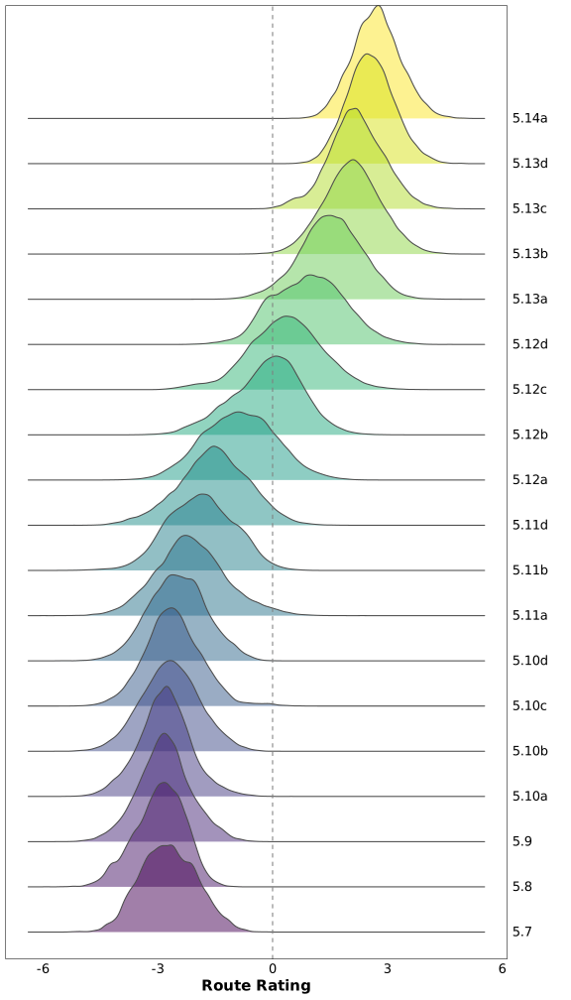
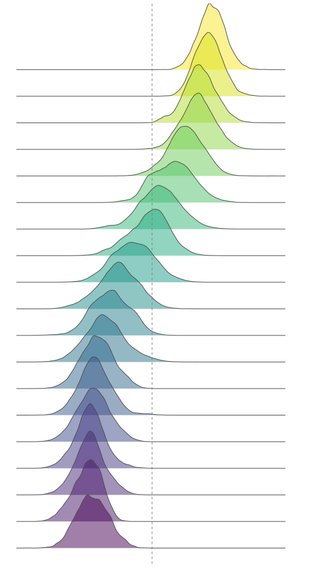
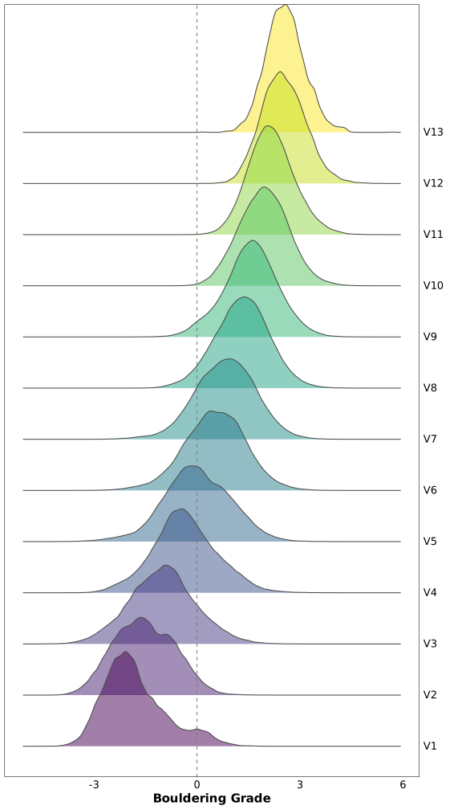
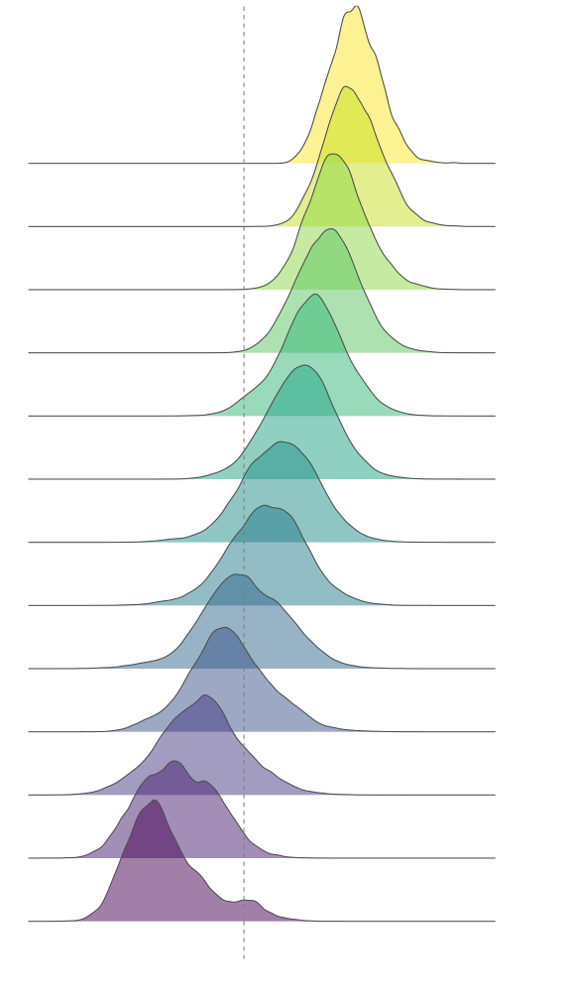

![]()
You can check the page’s source code by clicking on the </> Code button at the top-right.
Setup
library(here) # File path management
library(pipebind) # Piping goodies
library(data.table) # Data wrangling (fast)
library(dplyr) # Data wrangling
library(dtplyr) # data.table backend for dplyr
library(dbplyr) # SQL backend for dplyr
library(DBI) # Database connection
library(RSQLite) # SQLite interface
library(purrr) # Manipulating lists
library(stringr) # Manipulating strings
library(lubridate) # Manipulating dates
library(cmdstanr) # R interface with Stan
library(posterior) # Wrangling Stan model ouputs
library(ggplot2) # Plots
library(ggridges) # Ridgeline plots
library(bayesplot) # Plots for Stan models
library(patchwork) # Combining plots
options(
mc.cores = max(1L, parallel::detectCores(logical = TRUE)),
scipen = 999L,
digits = 4L,
ggplot2.discrete.colour = \() scale_color_viridis_d(),
ggplot2.discrete.fill = \() scale_fill_viridis_d()
)
nrows_print <- 10
data.table::setDTthreads(getOption("mc.cores"))Stan setup
Installing CmdStan
cmdstanr::check_cmdstan_toolchain(fix = TRUE, quiet = TRUE)
cpp_opts <- list(
stan_threads = TRUE
, STAN_CPP_OPTIMS = TRUE
, STAN_NO_RANGE_CHECKS = TRUE # WARN: remove this if you haven't tested the model
, PRECOMPILED_HEADERS = TRUE
, CXXFLAGS_OPTIM = "-march=native -mtune=native"
, CXXFLAGS_OPTIM_TBB = "-mtune=native -march=native"
, CXXFLAGS_OPTIM_SUNDIALS = "-mtune=native -march=native"
)
cmdstanr::install_cmdstan(cpp_options = cpp_opts, quiet = TRUE)Loading CmdStan (if already installed)
highest_cmdstan_version <- fs::dir_ls(config$cmdstan_path) |> fs::path_file() |>
keep(\(e) str_detect(e, "cmdstan-")) |>
bind(x, str_split(x, '-', simplify = TRUE)[,2]) |>
reduce(\(x, y) ifelse(utils::compareVersion(x, y) == 1, x, y))
set_cmdstan_path(glue::glue("{config$cmdstan_path}cmdstan-{highest_cmdstan_version}"))Setting up knitr’s engine for CmdStan
## Inspired by: https://mpopov.com/blog/2020/07/30/replacing-the-knitr-engine-for-stan/
## Note: We could haved use cmdstanr::register_knitr_engine(),
## but it wouldn't include compiler optimizations & multi-threading by default
knitr::knit_engines$set(
cmdstan = function(options) {
output_var <- options$output.var
if (!is.character(output_var) || length(output_var) != 1L) {
stop(
"The chunk option output.var must be a character string ",
"providing a name for the returned `CmdStanModel` object."
)
}
if (options$eval) {
if (options$cache) {
cache_path <- options$cache.path
if (length(cache_path) == 0L || is.na(cache_path) || cache_path == "NA")
cache_path <- ""
dir <- paste0(cache_path, options$label)
} else {
dir <- tempdir()
}
file <- write_stan_file(options$code, dir = dir, force_overwrite = TRUE)
mod <- cmdstan_model(
file,
cpp_opts <- list(
stan_threads = TRUE
, STAN_CPP_OPTIMS = TRUE
, STAN_NO_RANGE_CHECKS = TRUE # The model was already tested
, PRECOMPILED_HEADERS = TRUE
# , CXXFLAGS_OPTIM = "-march=native -mtune=native"
, CXXFLAGS_OPTIM_TBB = "-mtune=native -march=native"
, CXXFLAGS_OPTIM_SUNDIALS = "-mtune=native -march=native"
),
stanc_options = list("Oexperimental")
)
assign(output_var, mod, envir = knitr::knit_global())
}
options$engine <- "stan"
code <- paste(options$code, collapse = "\n")
knitr::engine_output(options, code, '')
}
)─ Session info ───────────────────────────────────────────────────────────────
setting value
version R version 4.2.1 (2022-06-23)
os Ubuntu 20.04.4 LTS
system x86_64, linux-gnu
ui X11
language (EN)
collate C.UTF-8
ctype C.UTF-8
tz Europe/Paris
date 2022-10-13
pandoc 2.19.2
Quarto 1.2.207
Stan (CmdStan) 2.30.1
─ Packages ───────────────────────────────────────────────────────────────────
! package * version date (UTC) lib source
P bayesplot * 1.9.0 2022-03-10 [?] CRAN (R 4.2.0)
P cmdstanr * 0.5.3 2022-10-12 [?] Github (stan-dev/cmdstanr@cdd62a0)
P crayon * 1.5.2 2022-09-29 [?] CRAN (R 4.2.1)
P data.table * 1.14.5 2022-10-12 [?] Github (Rdatatable/data.table@052f8da)
P DBI * 1.1.3 2022-06-18 [?] CRAN (R 4.2.0)
P dbplyr * 2.2.1.9000 2022-10-12 [?] Github (Tidyverse/dbplyr@5ce71b7)
P dplyr * 1.0.99.9000 2022-10-12 [?] Github (Tidyverse/dplyr@34981f9)
P dtplyr * 1.2.2 2022-08-20 [?] CRAN (R 4.2.1)
P ggplot2 * 3.3.6 2022-05-03 [?] CRAN (R 4.2.0)
P ggridges * 0.5.4 2022-09-26 [?] CRAN (R 4.2.1)
P gt * 0.7.0 2022-08-25 [?] CRAN (R 4.2.1)
P gtExtras * 0.4.3 2022-10-08 [?] Github (jthomasmock/gtExtras@2b53a12)
P here * 1.0.1 2020-12-13 [?] CRAN (R 4.2.0)
P lubridate * 1.8.0 2021-10-07 [?] CRAN (R 4.2.0)
P patchwork * 1.1.2 2022-08-19 [?] CRAN (R 4.2.1)
P pipebind * 0.1.1 2022-08-10 [?] CRAN (R 4.2.0)
P posterior * 1.3.1 2022-09-06 [?] CRAN (R 4.2.1)
P purrr * 0.9000.0.9000 2022-10-13 [?] Github (Tidyverse/purrr@af857c2)
P RSQLite * 2.2.18 2022-10-04 [?] CRAN (R 4.2.1)
P stringr * 1.4.1 2022-08-20 [?] CRAN (R 4.2.1)
[1] /home/mar/Dev/Projects/R/ma-riviere.me/renv/library/R-4.2/x86_64-pc-linux-gnu
[2] /home/mar/Dev/Projects/R/ma-riviere.me/renv/sandbox/R-4.2/x86_64-pc-linux-gnu/9a444a72
P ── Loaded and on-disk path mismatch.
──────────────────────────────────────────────────────────────────────────────1 Data
1.1 Loading from SQL
Comparing raw SQL and dbplyr:
dbplyr automatically translates dplyr code into SQL
climb_dbp <- (reduce(
list(
tbl(con, "ascent") |> filter(country %like% "USA") |>
select(user_id, grade_id, method_id, crag, climb_type, route_name = name, ascent_date = date),
tbl(con, "grade") |> select(grade_id = id, usa_routes, usa_boulders),
tbl(con, "method") |> select(method_id = id, method_name = name)
),
.f = \(acc, i) left_join(acc, i)
)
|> select(-grade_id, -method_id)
|> collect()
)data.frame [658,822 x 8]
| [ omitted 658,807 entries ] |
Time difference of 2.611 secs
SELECT
ascent.user_id
, ascent.crag
, ascent.climb_type
, ascent.name AS route_name
, ascent.date AS ascent_date
, grade.usa_routes
, grade.usa_boulders
, method.name AS method_name
FROM ascent
JOIN grade ON grade.id = ascent.grade_id
JOIN method ON method.id = ascent.method_id
WHERE ascent.country = 'USA'data.frame [658,822 x 8]
| [ omitted 658,807 entries ] |
Time difference of 0.9949 secs
1.2 Processing
Comparing data.table, dplyr, and dtplyr:
climb_dt <- as.data.table(climb_dbp)
threshold_ascents_dt <- function(old_dt, limit = 20) {
new_dt <- old_dt[, if(.N >= limit) .SD, by = user_id
][, if(.N >= limit) .SD, by = route_id]
if (!identical(dim(old_dt), dim(new_dt)))
threshold_ascents_dt(new_dt, limit)
else return(new_dt)
}climb_dt <- climb_dt[,
`:=`(
route_id = str_c(
str_replace_all(crag, ' ', '_'), "__",
str_replace_all(route_name, ' ', '_'), "__",
fifelse(climb_type == 1, 'boulder', 'rope')
),
ascent_date = lubridate::as_datetime(ascent_date),
usa_boulders = factor(usa_boulders, levels = bouldering_grades),
usa_routes = factor(usa_routes, levels = route_ratings),
label = as.integer(method_name %chin% c("Onsight", "Flash"))
)
][climb_dt[, .I[which.min(ascent_date)], by = .(user_id, route_id)]$V1
][, `:=`(route_rating = mode(usa_routes), bouldering_grade = mode(usa_boulders)),
by = route_id
]
(dt_clean <- threshold_ascents_dt(climb_dt)
[, route_idx := .GRP, keyby = route_id
][, user_idx := .GRP, keyby = user_id
][, -c("usa_routes", "usa_boulders")]
)data.table [232,887 x 12]
| [ omitted 232,872 entries ] |
Time difference of 9.965 secs(df_clean <- climb_dbp
|> mutate(
route_id = str_c(
str_replace_all(crag, ' ', '_'), "__",
str_replace_all(route_name, ' ', '_'), "__",
if_else(climb_type == 1, 'boulder', 'rope')
),
ascent_date = lubridate::as_datetime(ascent_date),
usa_boulders = factor(usa_boulders, levels = bouldering_grades),
usa_routes = factor(usa_routes, levels = route_ratings)
)
|> group_by(route_id)
|> mutate(route_rating = mode(usa_routes), bouldering_grade = mode(usa_boulders))
|> ungroup()
|> select(-c(usa_routes, usa_boulders))
|> mutate(label = as.integer(method_name %in% c("Onsight", "Flash")))
|> group_by(user_id, route_id) |> slice(which.min(ascent_date)) |> ungroup()
|> threshold_ascents_df(limit = 20) |> ungroup()
|> group_by(route_id) |> mutate(route_idx = cur_group_id()) |> ungroup()
|> group_by(user_id) |> mutate(user_idx = cur_group_id()) |> ungroup()
)data.frame [232,887 x 12]
| [ omitted 232,872 entries ] |
Time difference of 34.51 secsdtplyr automatically translates dplyr code into data.table
(dtp_clean <- climb_dbp
|> lazy_dt()
|> mutate(
route_id = str_c(
str_replace_all(crag, ' ', '_'), "__",
str_replace_all(route_name, ' ', '_'), "__",
if_else(climb_type == 1, 'boulder', 'rope')
),
ascent_date = lubridate::as_datetime(ascent_date),
usa_boulders = factor(usa_boulders, levels = bouldering_grades),
usa_routes = factor(usa_routes, levels = route_ratings)
)
|> group_by(route_id)
|> mutate(route_rating = mode(usa_routes), bouldering_grade = mode(usa_boulders))
|> ungroup()
|> select(-c(usa_routes, usa_boulders))
|> mutate(label = as.integer(method_name %in% c("Onsight", "Flash")))
|> group_by(user_id, route_id) |> slice(which.min(ascent_date)) |> ungroup()
|> threshold_ascents_dtp(limit = 20) |> ungroup()
|> group_by(route_id) |> mutate(route_idx = cur_group_id()) |> ungroup()
|> group_by(user_id) |> mutate(user_idx = cur_group_id()) |> ungroup()
|> collect()
)data.frame [232,887 x 12]
| [ omitted 232,872 entries ] |
Time difference of 11.34 secs2 Model
2.1 Stan code
Updated Stan code using within-chain parallelization
functions {
array[] int sequence(int start, int end) {
array[end - start + 1] int seq;
for (n in 1 : num_elements(seq)) {
seq[n] = n + start - 1;
}
return seq;
}
// Compute partial sums of the log-likelihood
real partial_log_lik_lpmf(array[] int seq, int start, int end,
data array[] int labels, real mean_ability,
data array[] int users, vector user_ability,
data array[] int routes, vector route_difficulty) {
real ptarget = 0;
int N = end - start + 1;
vector[N] mu = mean_ability + rep_vector(0.0, N);
for (n in 1 : N) {
int nn = n + start - 1;
mu[n] += user_ability[users[nn]] - route_difficulty[routes[nn]];
}
ptarget += bernoulli_logit_lpmf(labels[start : end] | mu);
return ptarget;
}
}
data {
int<lower=1> num_ascents;
int<lower=1> num_users;
int<lower=1> num_routes;
array[num_ascents] int<lower=1, upper=num_users> users;
array[num_ascents] int<lower=1, upper=num_routes> routes;
array[num_ascents] int<lower=0, upper=1> labels;
int grainsize;
}
transformed data {
array[num_ascents] int seq = sequence(1, num_ascents);
}
parameters {
real mean_ability;
vector[num_users] user_ability;
vector[num_routes] route_difficulty;
}
model {
user_ability ~ std_normal();
route_difficulty ~ std_normal();
mean_ability ~ std_normal();
target += reduce_sum(
partial_log_lik_lpmf, seq, grainsize,
labels, mean_ability, users, user_ability, routes, route_difficulty
);
}2.2 Stan data
stan_data <- list(
num_ascents = nrow(dt_clean),
num_users = n_distinct(dt_clean$user_id),
num_routes = n_distinct(dt_clean$route_id),
routes = pull(dt_clean, route_idx),
users = pull(dt_clean, user_idx),
labels = pull(dt_clean, label) |> as.integer(),
grainsize = max(100, nrow(dt_clean) / 50)
)List of 7
$ num_ascents: int 232887
$ num_users : int 2977
$ num_routes : int 4288
$ routes : int [1:232887] 2258 2259 2443 2459 2464 2471 2475 2482 2495 2715 ...
$ users : int [1:232887] 1 1 1 1 1 1 1 1 1 1 ...
$ labels : int [1:232887] 1 0 1 1 0 1 0 1 1 1 ...
$ grainsize : num 46582.3 Model fit
mod_stan <- mod_stan_exe$sample(
data = stan_data, seed = 666,
iter_warmup = 500, iter_sampling = 1000, refresh = 0,
chains = 6, parallel_chains = 6, threads_per_chain = 5
)Sampling takes ~4.89 minutes on my CPU (Ryzen 5950X, 16 Cores/32 Threads), on WSL2 (Ubuntu 20.04)
data.table [6 x 2]
3 Model diagnostics
Plotting random subsets of the traces
hist_trace_plot <- function(mod, vars) {
draws <- mod$draws(variables = vars, format = "draws_list")
patchwork::wrap_plots(
bayesplot::mcmc_hist(draws, facet_args = list(nrow = length(vars))),
bayesplot::mcmc_trace(draws, facet_args = list(nrow = length(vars))),
widths = c(1, 1.5)
)
}4 Posterior Predictions
4.1 Posterior data
Getting our Posterior Predictions (subset of 500 draws per route) into long format:
Comparing data.table and dplyr (using the rvar format from posterior):
unique(dt_clean[, .(route_idx, bouldering_grade, route_rating, climb_type)], by = "route_idx")[
as.data.table(mod_stan$draws(variables = "route_difficulty") |>
bind(x, subset_draws(x, "route_difficulty", regex = T, draw = sample.int(ndraws(x), size = 500))))
[, .(route_difficulty = list(value)), by = variable
][, `:=`(route_idx = as.integer(str_extract(variable, "\\d{1,4}")), variable = NULL)],
on = "route_idx", nomatch = NULL
][, `:=`(
bouldering_grade = factor(bouldering_grade, levels = bouldering_grades),
route_rating = factor(route_rating, levels = route_ratings)
)][order(route_idx)] -> ppdata.table [4,288 x 5]
| [ omitted 4,273 entries ] |
Time difference of 1.883 secs
With dplyr, we can use the rvar format to encapsulate the samples from the model, which drastically reduces the size of the samples’ data.frame
pp_df <- (inner_join(
select(df_clean, route_idx, bouldering_grade, route_rating, climb_type) |>
distinct(route_idx, .keep_all = TRUE),
tidybayes::spread_rvars(mod_stan, route_difficulty[route_idx], ndraws = 500),
by = "route_idx"
)
|> mutate(
bouldering_grade = factor(bouldering_grade, levels = bouldering_grades),
route_rating = factor(route_rating, levels = route_ratings)
)
|> arrange(route_idx)
)data.frame [4,288 x 5]
| [ omitted 4,273 entries ] |
Time difference of 1.017 secs
4.2 Posterior plots:
Plot code
ridgeline_plot <- function(dat, var) {
if (class(dat[, route_difficulty]) == "list")
dat <- dat[, .(route_difficulty = unlist(route_difficulty)), by = setdiff(names(dat), 'route_difficulty')]
ggplot(dat, aes_string(y = var)) +
ggridges::geom_density_ridges(
aes_string(x = "route_difficulty", fill = var),
alpha = 0.5, scale = 2.5, color = "grey30"
) +
geom_vline(xintercept = 0, linetype = "dashed", color = "grey50") +
labs(x = str_to_title(str_replace_all(var, "_", " ")), y = "") +
scale_y_discrete(position = "right") +
theme(legend.position = "none", axis.line.y = element_blank())
}Route Rating:
ridgeline_plot(pp[climb_type == 0], "route_rating")

Bouldering Grade:
ridgeline_plot(pp[climb_type == 1 & bouldering_grade != "V0"], "bouldering_grade")

Citation
@online{rivière2022,
author = {Marc-Aurèle Rivière},
title = {Bayesian {Rock} {Climbing} {Rankings}},
date = {2022-04-19},
url = {https://ma-riviere.me/content/posts/climbing},
langid = {en},
abstract = {This is simply a transposition of Ethan Rosenthal’s
{[}article on Bayesian Rock
Climbing{]}(https://www.ethanrosenthal.com/2022/04/15/bayesian-rock-climbing/)
to R. The Stan code was updated to use {[}within-chain
parallelization{]}(https://mc-stan.org/docs/2\_30/stan-users-guide/reduce-sum.html)
and {[}compiler
optimization{]}(https://mc-stan.org/docs/2\_30/stan-users-guide/optimization.html)
for faster CPU sampling.}
}